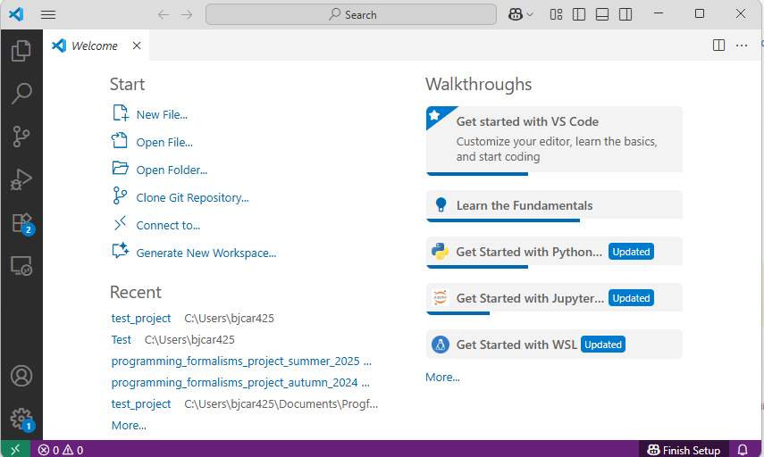

FAQ¶
The frequently asked questions, about:
- credits: can I get university credits for this course?
- eligibility, i.e. when to join the course
- preparation
- course teaching, i.e. how the course is conducted and ideas behind it
Credits¶
Can I get University Credits for this course?¶
No.
We don't give formal credits for the course. That is up to your supervisor. You can ask for a certificate after the course that helps with the decisions.
Eligibility¶
I have never programmed before. Am I eligible?¶
Not yet (for your own good)!
This is not an introductory course on programming. Learners are expected to know basic programming concepts, such as variables and functions.
In this course, you will work together a lot. It will be likely to be noticed that you do not have programming experience yet, and you may feel bad about that. Take an introductory programming course first and then we hope to see you here again!
I am a non-Python programmer. Am I eligible?¶
Yes.
In the course, we will use Python as the workhorse language, as most of our learners have experience with Python.
You will write code in Python in exercises. To make that possible for non-Python programmers:
- code will be simple and/or copy-pasted
- learners are usually paired up, so that usually one of the learners knows Python.
Preparation¶
How do I prepare?¶
See prerequisites for how to prepare.
Prerequisites¶
Warning
- This page may be updated during the next days.
- Please email back to Björn to let us know if somthing is unclear in the instructions!
How do I know I have VS Code installed?¶
You know if you have VS Code installed, if you can start this program and it looks like this:

Otherwise, download here
How do I know I have a Git account configured on your computer?¶
Git (specific installation may be required) and terminals are already integrated in VS Code and can be the first choice Otherwise follow the steps in some installation procedures!
Check configure git section
How do I know I have a GitHub account?¶
You have set up a GitHub account, if you can login at https://github.com/.
Otherwise, sign up for GitHub account, following these instructions
A second step is to connect Git and GitHub in a nice way, see Git–GitHub connection through ssh keys
How do I know if I have Python installed?¶
You have installed Python, if
- If not working, follow the installation steps suitable for you and/or instructions for Python in VSCode.
Can you run Python from VS Code?¶
Yes.
We even use VS Code to install Python, as VS Code has an easy to install Python plugin.
How do I know that I know the basics of Python?¶
You know enough basic Python, if:
- You can describe what a variable is
- You can change the value of a variable
- You can show the value of a variable on screen
If you do not know enough Python, chapters 1 and 2 of 'How to Think Like a Computer Scientist' is all you need.
Why do you use VS Code?¶
Because it ...
- is free (as in beer)
- works on all operating systems
- has plugins that are easy to install to develop Python code as part of a Python package
- has
gitfor version control built-in - has a built-in terminal
Can I use PyCharm? Or IDLE? Or any other IDE?¶
Yes.
However, we may not be able to help you with your IDE problems.
Within your IDE, you will need:
- To develop Python code as part of a Python package
- To use
gitfor version control
How do I know I have a good Zoom setup?¶
You have a Zoom good setup, if:
- you can talk freely. If not, find a room/place where you can.
- others in the Zoom room can clearly hear what you say. If not, use a microphone.
- you can clearly hear what others in the Zoom room say. If not, use a headset.
Do I really need a good Zoom setup?¶
Yes.
You will be working together with other learners a lot. Not being able to talk and/or share your screen and/or your camera is likely to make you feel excluded.
Some installation and configuring procedures¶
Git Bash¶
- Version >= 2.28 would do
There are several different ways to run the course material on a Windows computer. Neither is perhaps optimal, and the material itself has not been adapted specifically for Windows. Nevertheless, in principle everything should be possible to run. A few ways you could setup:
Git-windows with a command line and Git integrated
-
Install Git Windows: https://gitforwindows.org/ (easiest if you want to start fast and plan to work in windows environment)
- Follow the setup insctructions from the Windows part at https://coderefinery.github.io/installation/git-in-terminal/ by CodeRefinery.
- Included will be the Git Bash
- We use the VSCode built-in terminal to some extent
- Choose one of your choice, the built-in or another!
- Chances are big that you already have git installed on your computer.
- You can check by running e.g.
git --version.- and if it reports 2.28 or higher, then you are good.
- If you have a very old version of git or you don't have it,
install it following
the git MacOS download instructions
- You may have to do
xcode select --installfrom the Mac terminal.
- You may have to do
gitcomes installed with all Linux distributions- To install
git, dosudo apt-get install git
Using VS Code as a git editor¶
- When Git is installed you may need to restart a shell in VS code before it works.
- This will set VS Code as the editor that Git starts.
- It will start a new tab, and Git will wait until you save and close that tab.
- Git for Windows on Windows may automatically set this if you select it as an editor.
- Otherwise:
Configure git¶
This must be done
Follow these instructions. https://nbis-reproducible-research.readthedocs.io/en/course_2104/setup/#installing-git
Git–GitHub connection through ssh keys¶
(This may take a while to get working, but is worth it) https://coderefinery.github.io/installation/ssh/
- Test:
ssh -T git@github.com- Output should be something like this:
Hi bclaremar! You've successfully authenticated, but GitHub does not provide shell access.
- Output should be something like this:
- If not working, these are the approximate steps to be done in your terminal. It can vary between systems, so link above is more certain.
ssh-keygen -t ed25519 -C "<email address for your GitHub account>"
eval "$(ssh-agent -s)"
ssh-add ~/.ssh/id_ed25519
- For WINDOWS
- On Mac, use
pbcopyinstead, like:
-
Then go to your GitHub account on the web.
- In the upper-right corner of any page, click your profile photo, then click Settings.
- In the "Access" section of the sidebar, click SSH and GPG keys.
- Click New SSH key or Add SSH key.
- In the "Title" field, add a descriptive label for the new key. For example, if you're using a personal laptop, you might call this key "Personal laptop".
- Select the type of key authentication.
- In the "Key" field, paste your public key.
- Click Add SSH key.
- If prompted, confirm access to your account on GitHub.
-
Now test again in your terminal:
ssh -T git@github.com- Output should be something like this:
Hi bclaremar! You've successfully authenticated, but GitHub does not provide shell access.
- Output should be something like this:
-
If there was a problem, confer the full article Adding a new SSH key to your GitHub account.
Python¶
- Use what you already have
-
If you don't have Python there are different ways to go. We won't use Conda during the lessons, for instance.
- Bare python (recommended for the "bare metal" user)
- You may need to install other packages (pip)
- install python
- note macOS: the system install of Python on macOS is not supported, instead:
brew install python3
- Anaconda (recommended for python/R developers liking GUI:s)
- Count with 15-20 minutes
- includes
- many many packages
- conda packager
- pip installer
- GUI launchers, like example
- jupyter notebook/lab
- Spyder
- RStudio
- etc...
- install Anaconda
- miniconda (recommended for terminal user)
- Faster to install
- Includes:
- less packages than Anaconda, and no GUI launcher but:
- conda packager
- pip installer
- etc...
- install Miniconda
- Bare python (recommended for the "bare metal" user)
-
In Linux and Bash, Python should work from the command line by typing
python/python3or running a script withpython <script>/python3 <script>
Python in VS Code¶
- Step 1. Install a supported version of Python on your system, see above.
- Step 2. Install the Python extension for Visual Studio Code from the left menu bar.
- Step 3. Open or create a Python file and start coding.
- Example: make a hello.py script and run it with the "play" button.
- Choose which Python interpreter to use.
- Step 4. To run Python from a VS Code terminal (Bash or other) you may have to restart the shell
Courses¶
Git courses¶
- Learn the basics!
-
Choose one or several of these!
-
Git courses
Python courses¶
- We assume familiarity with python at least equivalent
-
Learn the basics by choosing one or several of these courses!
- Python part of the UPPMAX introductory course
- Python programming with applications to bioinformatics.
Other solutions¶
There are some other solutions for installations but they are probably not supported by the teachers of the course.
Terminals¶
There are several different ways to run the course material on a Windows computer. Neither is perhaps optimal, and the material itself has not been adapted specifically for Windows. Nevertheless, in principle everything should be possible to run. A few ways you could setup:
Git-windows with a command line and Git integrated
-
Install Git Windows: https://gitforwindows.org/ (easiest if you want to start fast and plan to work in windows environment)
- Follow the setup insctructions from the Windows part at https://coderefinery.github.io/installation/git-in-terminal/ by CodeRefinery.
- Included will be the Git Bash
Other possibilities
- Use the Windows 10 PowerShell
- Use the Linux Bash Shell (WSL) on Windows 10/11 (perhaps best practice if you plan to run Linux as well)
- This will give you access to a full command-line bash shell based on Linux on your Windows 10/11 PC.
- instructions below
- For the difference between the Linux Bash Shell and the PowerShell on Windows 10, see e.g. this article.
- Run as Linux through a virtual machine (and see the Linux setup above)
- not shown
Install Bash on Windows 10/11 (WSL), following the instructions at e.g. 1 of these resources:
Python from In Git-bash (Windows)¶
- Get it working from Git Bash
- if the command
type pythongives you a path, then proceed- otherwise you may have to do a new installation
- or find the path
- if anaconda installation you may add something like this:
echo 'export PATH="<path/to/Anaconda/root>:<path/to/anaconda/root>/Scripts:$PATH:' >> .bashrc- example:
/c/Users/bjcar425/AppData/Local/anaconda3:/c/Users/bjcar425/AppData/Local/anaconda3/Scripts
- example:
$ alias python='winpty python.exe'$ python -V- does it give you the python version 3-something?
- if the command
- Make it permanent
-
$ echo "alias python='winpty python.exe'" >> ~/.bashrc
Parts taken from https://nbis-reproducible-research.readthedocs.io/en/course_2104/setup/
Course teaching¶
What is the goal of the shared project?¶
See Projects for the goal of the shared project.
How is the course prepared?¶
- meetings
- lesson plans in the course material
- general lesson plans, which can be found at 'Misc } lesson_plans' of this GitHub repository
What happens to the retrospectives?¶
Retrospectives are:
- published online in unedited form at the 'Misc | evaluations' section of this GitHub repository
- discussed by the teachers after the lessons
- reflected upon, where the reflections can be found in at 'Misc | Reflections'
Why do you publish your retrospectives?¶
Because we like to be transparent.
What happens to the evaluations?¶
Evaluations are:
- published online in unedited form at 'Misc | Evaluations' of this GitHub repository.
- discussed by the teachers after the course
- reflected upon, where the reflections can be found in 'Misc | Reflections'
Why do you publish your evaluations?¶
Because we like to be transparent.
Why do you publish your reflections?¶
Because we like to be transparent.